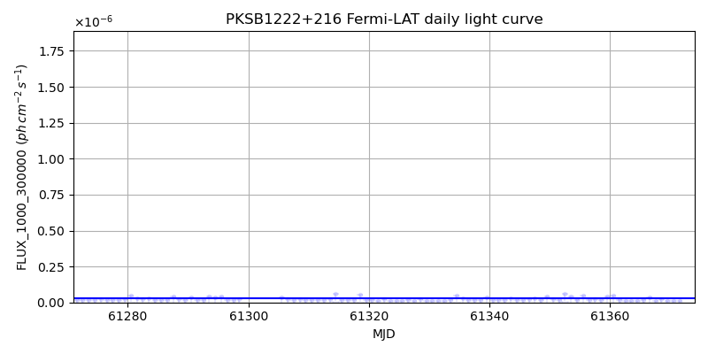

LAT Lightcurve site: https://fermi.gsfc.nasa.gov/ssc/data/access/lat/msl_lc/source/PKS_B1222p216
NED: Query
Time of last update of this page: UT: 2026-11-28 16:24 (MJD: 61372.684)
| Property | Value |
|---|---|
| R.A. | 12:24:54.48 |
| Dec. | 21:22:48.0 |
| z | 0.434 |
| 3FGL SpectrumType | LogParabola |
| 3FGL PL Index | |
| 3FGL Flux_100_300000 | 4.93e-07 1 / (s cm2) |
| 3FGL Flux_1000_300000 | 2.92e-08 1 / (s cm2) |
| 3FGL Flux >200 GeV | 1.62e-11 1 / (s cm2) |
| 3FGL Extrap. Crab >200 GeV | 0.07 |
| 3FGL Flux After EBL Absorption >200GeV | 3.51e-12 1 / (s cm2) |
| 3FGL EBL Crab Fraction >200GeV | 0.01 |
| MJD | dMJD | Flux | dFlux | Frac3FGL | FracCrab>200GeV | EBLFracCrab>200GeV |
|---|---|---|---|---|---|---|
| 61367.50 | 0.50 | 7.06e-08 | 0.00e+00 | 0.00 | 0.00 | 0.00 |
| 61368.50 | 0.50 | 4.17e-08 | 0.00e+00 | 0.00 | 0.00 | 0.00 |
| 61369.50 | 0.50 | 2.04e-07 | 0.00e+00 | 0.00 | 0.00 | 0.00 |
| 61370.50 | 0.50 | 2.95e-07 | 0.00e+00 | 0.00 | 0.00 | 0.00 |
| 61371.50 | 0.50 | 8.62e-08 | 0.00e+00 | 0.00 | 0.00 | 0.00 |

| MJD | dMJD | Flux | dFlux | Frac3FGL | FracCrab>200GeV | EBLFracCrab>200GeV |
|---|---|---|---|---|---|---|
| 61335.50 | 3.50 | 1.13e-07 | 0.00e+00 | 0.00 | 0.00 | 0.00 |
| 61342.50 | 3.50 | 8.85e-08 | 0.00e+00 | 0.00 | 0.00 | 0.00 |
| 61349.50 | 3.50 | 4.84e-08 | 0.00e+00 | 0.00 | 0.00 | 0.00 |
| 61356.50 | 3.50 | 3.17e-08 | 0.00e+00 | 0.00 | 0.00 | 0.00 |
| 61363.50 | 3.50 | 4.37e-08 | 0.00e+00 | 0.00 | 0.00 | 0.00 |

| MJD | dMJD | Flux | dFlux | Frac3FGL | FracCrab>200GeV | EBLFracCrab>200GeV |
|---|---|---|---|---|---|---|
| 61367.50 | 0.50 | 9.40e-09 | 0.00e+00 | 0.00 | 0.00 | 0.00 |
| 61368.50 | 0.50 | 2.43e-08 | 0.00e+00 | 0.00 | 0.00 | 0.00 |
| 61369.50 | 0.50 | 9.45e-09 | 0.00e+00 | 0.00 | 0.00 | 0.00 |
| 61370.50 | 0.50 | 1.07e-08 | 0.00e+00 | 0.00 | 0.00 | 0.00 |
| 61371.50 | 0.50 | 1.03e-08 | 0.00e+00 | 0.00 | 0.00 | 0.00 |

| MJD | dMJD | Flux | dFlux | Frac3FGL | FracCrab>200GeV | EBLFracCrab>200GeV |
|---|---|---|---|---|---|---|
| 61335.50 | 3.50 | 6.55e-09 | 0.00e+00 | 0.00 | 0.00 | 0.00 |
| 61342.50 | 3.50 | 6.37e-09 | 0.00e+00 | 0.00 | 0.00 | 0.00 |
| 61349.50 | 3.50 | 7.69e-09 | 0.00e+00 | 0.00 | 0.00 | 0.00 |
| 61356.50 | 3.50 | 6.43e-09 | 0.00e+00 | 0.00 | 0.00 | 0.00 |
| 61363.50 | 3.50 | 6.19e-09 | 0.00e+00 | 0.00 | 0.00 | 0.00 |
--------------------------------------------------------- Using user-supplied coords: 12:24:54.48 21:22:48.0 2000 --------------------------------------------------------- FLWO UT night of: 2026-11-29 Local Sid. @ Midnight: 04:08 Sunset (-15.0) (local, UT): 18:31 01:31 Sunrise (-15.0) (local, UT): 05:53 12:53 Moonrise (local, UT): 21:57 04:57 Moonset (local, UT): Moon phase: 0.72 --------------------------------------------------------- AzTime LSID UT Obj_el Obj_az Mn_el Mn_az Sep. --------------------------------------------------------- 18:31 22:39 01:31 -31.2 330.6 -32.9 32.1 51.3 19:01 23:09 02:01 -34.0 338.3 -29.4 38.9 51.0 19:31 23:39 02:31 -35.9 346.5 -25.4 45.0 50.6 20:01 00:09 03:01 -36.9 355.1 -21.0 50.6 50.3 20:31 00:39 03:31 -37.0 3.9 -16.2 55.6 50.0 21:01 01:09 04:01 -36.1 12.6 -11.1 60.2 49.7 21:31 01:39 04:31 -34.2 20.8 -5.4 64.5 49.4 22:01 02:09 05:01 -31.6 28.6 0.4 68.5 49.1 22:31 02:39 05:31 -28.2 35.6 5.8 72.2 48.8 23:01 03:10 06:01 -24.1 42.0 11.6 75.8 48.6 23:31 03:40 06:31 -19.6 47.8 17.5 79.4 48.3 00:01 04:10 07:01 -14.7 53.0 23.6 82.9 48.1 00:31 04:40 07:31 -9.4 57.7 29.7 86.5 47.9 01:01 05:10 08:01 -2.4 62.1 35.8 90.3 47.7 01:31 05:40 08:31 2.2 66.1 42.0 94.4 47.5 02:01 06:10 09:01 7.9 69.8 48.1 99.1 47.3 02:31 06:40 09:31 13.9 73.4 54.2 104.7 47.2 03:01 07:10 10:01 20.1 76.8 60.1 111.7 47.0 03:31 07:40 10:31 26.4 80.3 65.6 121.1 46.8 04:01 08:10 11:01 32.7 83.7 70.5 134.7 46.7 04:31 08:40 11:31 39.1 87.3 74.0 154.7 46.6 05:01 09:11 12:01 45.5 91.2 75.2 181.1 46.4 05:31 09:41 12:31 51.8 95.5 73.6 206.8 46.3 05:53 10:02 12:53 56.4 99.2 71.0 221.2 46.2 --------------------------------------------------------- Dark hours >55 deg.: 0.00